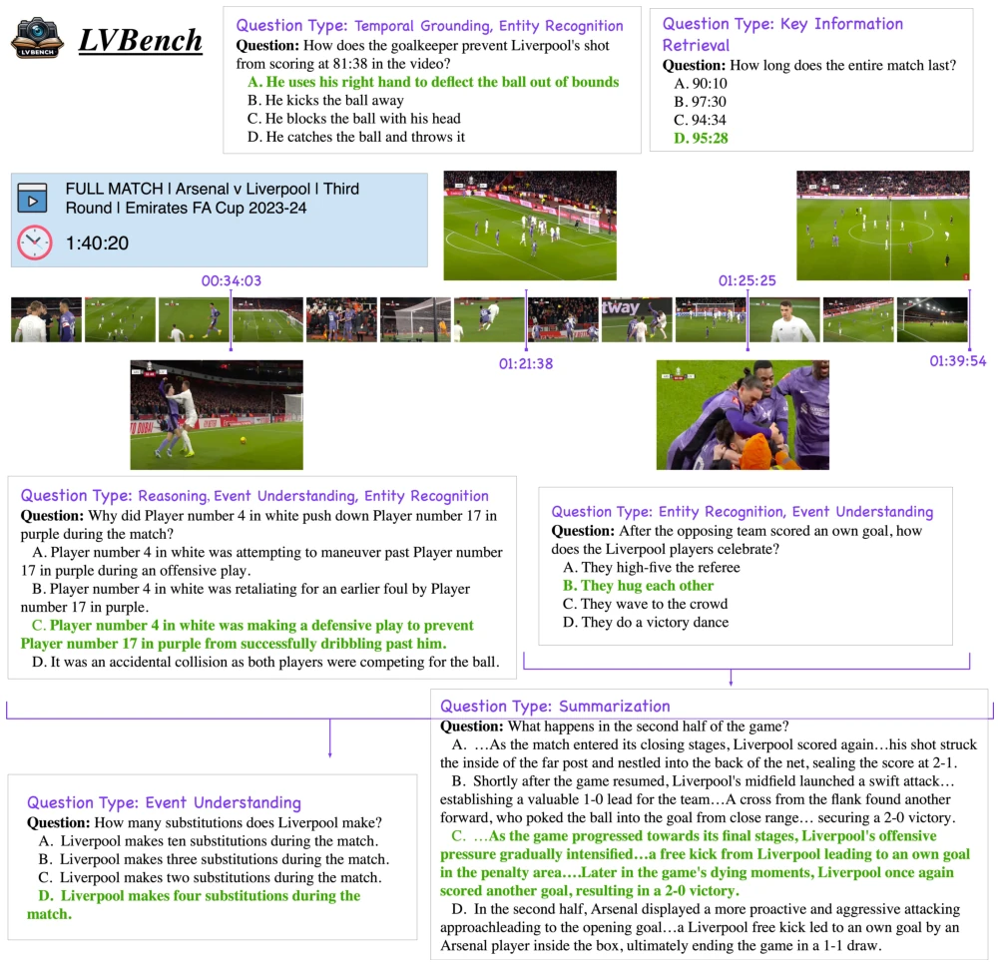
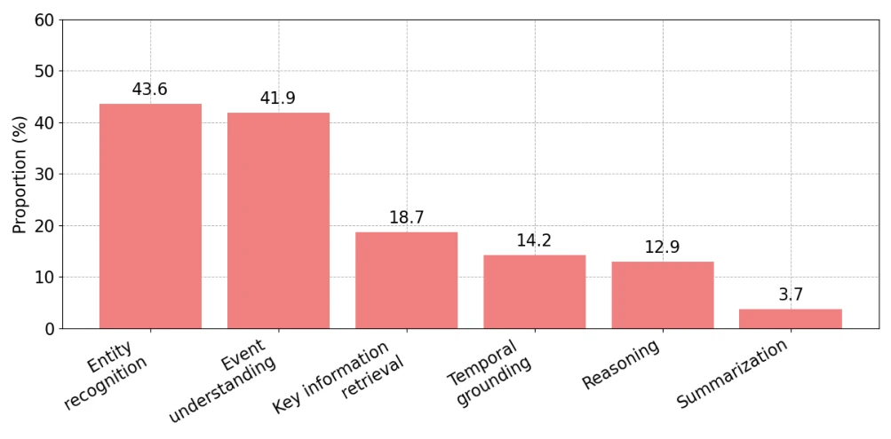
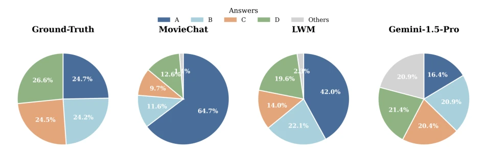
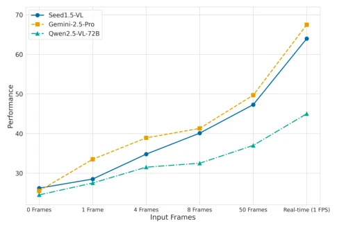
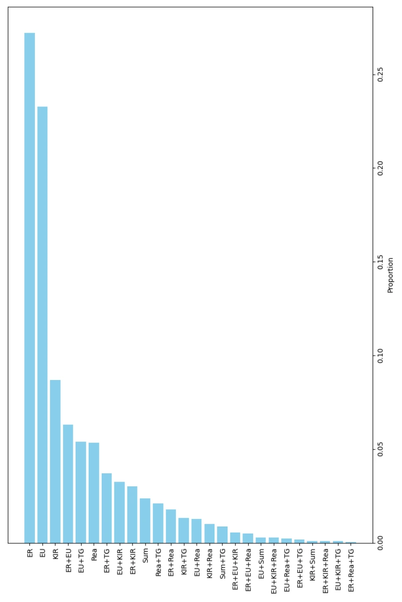

LVBench truly broadened horizons this time, with an average video duration of 4101 seconds directly trouncing existing benchmarks. Although MLLMs are competing fiercely on short videos, they reveal their flaws when it comes to long videos, and this benchmark has poured cold water on the industry. Highlights include strict 'clue duration' annotation and text-free filtering, forcing models to actually watch videos. However, excluding audio is a significant flaw, as hearing is important in the real world, especially in embodied scenarios. Moreover, human accuracy is 94%, while models are only at 67%, and this gap is even larger than the salary gap between me and my boss. In short, it is a good target, but do not expect models to watch movies for hours like humans immediately; long-term sequential memory remains a chronic problem.
Existing MLLMs mostly focus on short videos (<1 minute), such as MVBench [17] with an average of only 16 seconds, and LongVideoBench [40] is also only 473 seconds. Existing datasets like TGIF-QA [14] are only 3 seconds, severely underestimating long-range dependencies. However, scenarios such as embodied AI decision-making and movie reviews require hours of context. Existing long-video benchmarks like MovieChat [34] average 564 seconds, still insufficient to challenge extreme long-term sequential memory. Data collection difficulty and complex annotation are the main reasons. LVBench fills the evaluation gap for videos over 30 minutes, aimed at testing model memory and reasoning capabilities under extended temporal sequences, solving the pain point of 'seeing short but not remembering', and pushing models to adapt to real long-range application needs.

Figure 1. Examples from LVBench. LVBench covers problems involving various temporal and spatial dimensions.
The overall process is divided into four steps: data collection, task definition, QA generation, and quality control. First, 103 high-quality videos are screened from YouTube, covering 6 categories such as sports, documentaries, etc., ensuring clear protagonists and high event density. Defining 6 core capabilities (spatio-temporal localization, summarization, reasoning, etc.) and annotating 'clue duration'. QA generation adopts three stages: analysis, questioning, construction, emphasizing question specificity. The key innovation lies in quality control: using GLM-4 [8] and GPT-4 [1] to detect text-solvable problems, removing samples that do not require vision. Specially designed 'clue duration' annotation, i.e., the minimum video clip required for the answer, forcing models to locate key information. Additionally, mandating that each video covers all 6 capability categories, avoiding distribution bias, ensuring evaluation comprehensiveness, and ensuring logical coherence through human audit.

Figure 2. The proportion of different core capabilities.
Evaluated 26 models (13 non-native, 13 native long-video support). The metric is accuracy. Human average 94.4%, best model Gemini-2.5-Pro [7] only 67.4%, the gap is significant. Found that native long-video models (e.g., MovieChat [34]) have poor instruction following capabilities, often choosing A or refusing to answer. Frame density ablation shows performance leap from increasing from 50 frames to 1 FPS, proving dense visual input is crucial for long-term sequential dependencies. Gap between open-source and closed-source models exceeds 20%, indicating long-video understanding remains a bottleneck. Performance differences across different video categories are large, documentary category models performed the worst, indicating insufficient domain generalization capabilities.

Figure 3. Failure analysis of native long-video models via answer distribution.

Figure 4. Impact of Frame Count on Model Performance.
其他图片Other Figures

Figure 5. The proportion of core capability combinations.